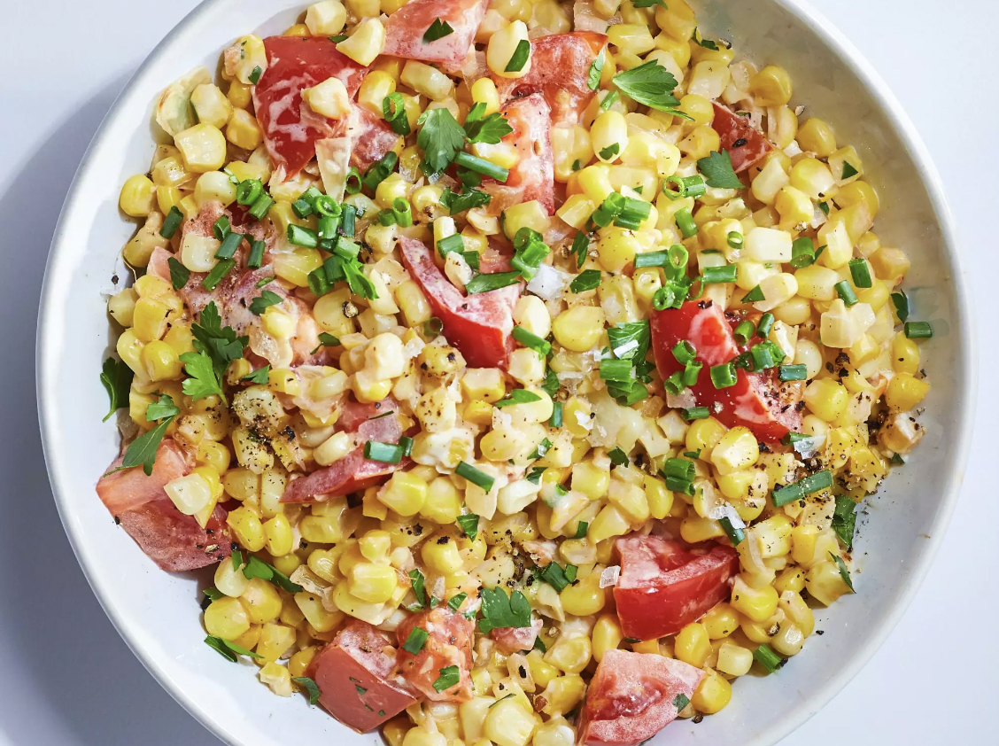

Creamed Corn with Tomatoes

Creamed Corn with Tomatoes recipe:
Creamed Corn with Tomatoes is an amazing, ligh summer meal
Nutrition Facts:
Per Serving: 207 calories; fat 9.9g; cholesterol 15.6mg; sodium 186.3mg; carbohydrates 28.7g; protein 5.8g. Full Nutrition
Ingredients:
- 1 tablespoon olive oil
- 1 cup chopped onion
- 13 cups fresh corn kernels, cut from the cob
- 2 ounces cream cheese
- 2 tablespoons water
- 2 medium tomatoes, chopped
- ½ tablespoon chopped fresh parsley
- ½ tablespoon chopped fresh basil
- ¼ teaspoon salt
- ⅛ teaspoon ground black pepper
Steps:
- Heat oil in a large skillet over medium heat. Add onion; and cook until soft and translucent, about 3 minutes. Stir in corn kernels. Cook, stirring occasionally, until kernels are tender, about 5 minutes. Stir in cream cheese and water until cream cheese is melted. Stir in tomatoes, parsley, and basil. Season with salt and black pepper.